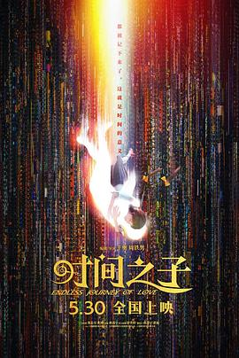
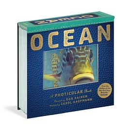
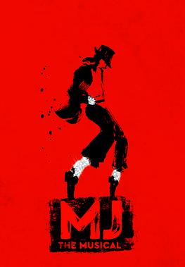

2025年5月
广播发布后不可编辑，所以每条都是那一刻的原话。
2025-05-29 20:42:57
 想看 最后生还者 第三季 / The Last of Us Season 3
想看 最后生还者 第三季 / The Last of Us Season 3
最好不要超过5集，来个痛快吧
2025-05-29 20:41:53
 看过 最后生还者 第二季 / The Last of Us Season 2
看过 最后生还者 第二季 / The Last of Us Season 2
怎么跟《鱿鱼游戏》一样，第二部要拆成两季拍啊，真的受不了，本来游戏都是一口气玩完的，电视剧却要挤牙膏一样分成两季。HBO吃相难看、迟早💊 这一季叙事真的太乱了，至少每一集都给我一些主时间线的剧情吧，结果好几集就是纯回忆。下一季期待值已经降到很低了
2025-05-25 12:12:13
 想看 Re：从零开始的异世界生活 第二季 / Re:ゼロから始める異世界生活 2nd season
想看 Re：从零开始的异世界生活 第二季 / Re:ゼロから始める異世界生活 2nd season
马克下吧
2025-05-25 12:11:48
 看过 Re：从零开始的异世界生活 新编集版 / Re:ゼロから始める異世界生活 新編集版
看过 Re：从零开始的异世界生活 新编集版 / Re:ゼロから始める異世界生活 新編集版
为什么我以前看过的25集版没有了，豆瓣你又又又又删条目+我的上古评论啊。。。本来还想看看当年写了啥的，结果404了。。。。。。。。。。。。。。。。。。。。。。。。。。。。。。。。我也记不得当年给了多少分了，anyway，豆瓣吃枣💊
2025-05-25 12:02:17

还挺精彩的，尤其是打擦边球的伦理部分。外星生物的设定有点扯了，又智慧又无能，怎么会有这种生物的存在。剧情总体来说还行，略荒诞。
2025-05-23 22:30:04
 看过 莉可丽丝：友谊是时间的窃贼 / リコリス・リコイル Friends are thieves of time.
看过 莉可丽丝：友谊是时间的窃贼 / リコリス・リコイル Friends are thieves of time.
6集看下来还是第一集最搞笑 //算是mini SP，片尾曲太搞笑了吧
2025-05-23 11:54:45

2025-05-23 11:54:10
 看过 爱，死亡和机器人 第四季 / Love, Death & Robots Season 4
看过 爱，死亡和机器人 第四季 / Love, Death & Robots Season 4
去掉了“剧情”标签，因为大部分都没啥剧情。继续吃第一季老本，10集里面只有少数几集很有意思，其他的看完感觉很无语。。
2025-05-23 06:31:27

2025-05-22 05:10:56
想读 控糖革命
2025-05-21 12:55:46
原来有好多本，先标记最初的两本吧
2025-05-21 12:55:01

这个书太酷了！
2025-05-16 14:20:51

从OST来的
2025-05-11 10:08:48

很多熟悉的面孔，剧情还算紧凑，但是也比较拼凑，为啥这么多人都要插手一脚这个烫手山芋，以至于一个简单的案子拍了8集。。。原作作者是birder可以确认了，虽然我是get不来。白宫的建模非常不错，镜头也很吸引人
2025-05-10 17:53:06
 看过 唐探1900
看过 唐探1900
这个穿越的设定有点出戏， 案件设计的还可以，不过线多，也确实有点太乱了。我最期待的印第安安家线竟然被吞了，非常不过瘾。另外，不知道是道具组省钱还是一直在埋伏笔，那个大佛头像在很多地方都出现了
2025-05-05 06:01:54
 想看 大风杀
想看 大风杀
2025-05-05 06:01:04

澳洲巡演版，总体看下来感觉musical虽然作为上古的艺术形式，还是有不可替代的魅力。舞台效果、衔接都很完美，然后从头贯穿到尾的镜子暗示着《Man in the Mirror》，经典曲目唱的非常有感觉。后面也难免提到了大家传的谣言说他皮肤漂白，当他说出来他以身为黑人为荣的时候真是感动。身为asian不也是如此，这是值得自豪的事情。这次坐的是最上面的第一排，感觉下次狮子王要买最贵的票效果应该是最棒的。感觉音乐剧真的是越演越欢乐，那种从舞台洋溢到全场的欢乐远超演唱会、演奏会。最后的两次腾空而起太酷炫了，各种闪亮效果。 //买到了TodayTix的打折票，期待下10天后
2025-05-01 18:27:40
 看过 百万秘宝攻防战 第一季 / Million Dollar Secret Season 1
看过 百万秘宝攻防战 第一季 / Million Dollar Secret Season 1
这个选址真的美啊，剪辑剪得也不错，有不少比较确定的剧情这么一剪就变得扑朔迷离了。尤其是结局，本来我都很确信是很无聊的Cara夺冠，但是中间这么一叙事 Cory竟然有那么一瞬间感觉他会赢。但是总体来说中间精彩，结尾略无聊。花100万的成本（当然还有酒店装修、摄像之类的）拍个这个综艺还真的挺有意思。